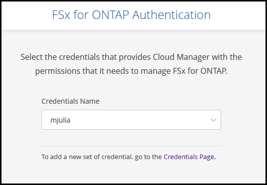
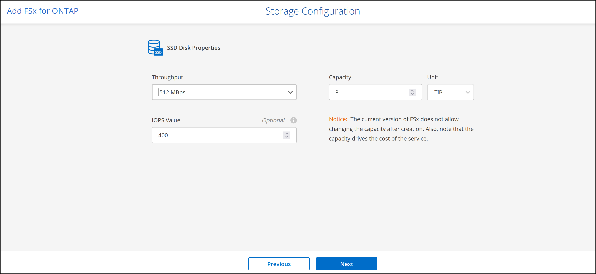
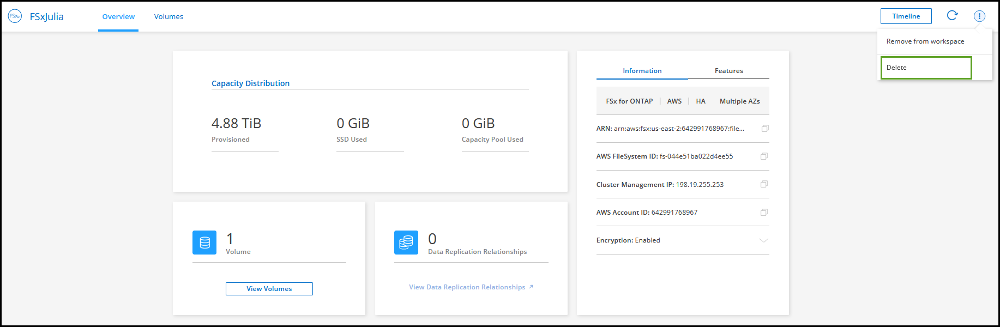

Request doc changes
Request doc changes Edit this page
Edit this page Learn how to contribute
Learn how to contributeCreate and manage an Amazon FSx for ONTAP working environment
Contributors
Using Cloud Manager you can create and manage FSx for ONTAP working environments to add and manage volumes and additional data services.
Create an Amazon FSx for ONTAP working environment
The first step is to create an FSx for ONTAP working environment. If you already created an FSx for ONTAP file system in the AWS Management Console, you can discover it using Cloud Manager.
Before creating your FSx for ONTAP working environment in Cloud Manager, you will need:
-
The ARN of an IAM role that gives Cloud Manager the permissions needed to create an FSx for ONTAP working environment. See adding AWS credentials to Cloud Manager for details.
-
The region and VPN information for where you will create the FSx for ONTAP instance.
-
In Cloud Manager, add a new Working Environment, select the location Amazon Web Services, and click Next.
-
Select Amazon FSx for ONTAP and click Next.
-
Authenticate FSx for ONTAP in Cloud Manager.
-
If there is an existing IAM role in your account with the correct AWS permissions for FSx for ONTAP, select it from the dropdown.

-
If there is no IAM role in your account, click Credentials Page and follow the steps in the wizard to add an ARN for an AWS IAM role with FSx for ONTAP credentials. See adding AWS credentials to Cloud Manager for details.

-
-
Provide information about your FSx for ONTAP instance:
-
Enter the working environment name you want to use.
-
Optionally, you can create tags by clicking the plus sign and entering a tag name and value.
-
Enter and confirm the ONTAP Cluster password you want to use.
-
Select the option to use the same password for your SVM user or set a different password.
-
Click Next.

-
-
Provide region and VPC information:
-
Select a region and VPC with subnets in at least two Availability Zones so each node is in a dedicated Availability Zone.
-
Accept the default security group or select a different one. AWS security groups control inbound and outbound traffic. These are configured by your AWS admin and are associated with your AWS elastic network interface (ENI).
-
Select an Availability Zone and subnet for each node.
-
Click Next.

-
-
Leave CIDR Range empty and click Next to automatically set an available range. Optionally, you can use AWS Transit Gateway to manually configure a range.

-
Select route tables that include routes to the floating IP addresses. If you have just one route table for the subnets in your VPC (the main route table), Cloud Manager automatically adds the floating IP addresses to that route table. Click Next to continue.

-
Accept the default AWS master key or click Change Key to select a different AWS Customer Master Key (CMK). For more information on CMK, see Setting up the AWS KMS. Click Next to continue.

-
Configure your storage:
-
Select the throughput, capacity, and unit.
-
You can optionally specify an IOPS value. If you don’t specify an IOPS value, Cloud Manager will set a default value based on 3 IOPS per GiB of the total capacity entered. For example, if you enter 2000 GiB for the total capacity and no value for the IOPS, the effective IOPS value will be set to 6000.

If you specify an IOPS value that does not meet the minimum requirements, you’ll receive an error when adding the working environment.
-
Click Next.

-
-
Review your configuration:
-
Click the tabs to review your ONTAP properties, provider properties, and networking configuration.
-
Click Previous to make changes to any settings.
-
Click Add to accept the settings and create your Working Environment.

-
Cloud Manager displays your FSx for ONTAP configuration on the Canvas page.

You can now add volumes to your FSx for ONTAP working environment using Cloud Manager.
Discover an existing FSx for ONTAP file system
If you created an FSx for ONTAP file system using the AWS Management Console or if you want to restore a working environment you previously removed, you can discover it using Cloud Manager.
-
In Cloud Manager, click Add Working Environment, select Amazon Web Services.
-
Select Amazon FSx for ONTAP and click Click Here.
-
Select existing credentials or create new credentials. Click Next.
-
Select the AWS region and the working environment you want to add.

-
Click Add.
Cloud Manager displays your discovered FSx for ONTAP file system.
Remove FSx for ONTAP from the workspace
You can remove FSx for ONTAP from Cloud Manager without deleting your FSx for ONTAP account or volumes. You can add the FSx for ONTAP working environment back to Cloud Manager at any time.
-
Open the working environment. If you don’t have a Connector in AWS, you will see the prompt screen. You can ignore this and proceed with removing the working environment.
-
At the top right of the page, select the actions menu and click Remove from workspace.

-
Click Remove to remove FSx for ONTAP from Cloud Manager.
Delete the FSx for ONTAP working environment
You can delete the FSx for ONTAP from Cloud Manager.
-
You must delete all volumes associated with the file system.

|
You will need an active Connector in AWS to remove or delete volumes. |
-
You cannot delete a working environment that contains failed volumes. Failed volumes must be deleted using the AWS Management Console or CLI prior to deleting FSx for ONTAP files system.
|
|
This action will delete all resources associated with the working environment. This action cannot be undone. |
-
Open the working environment. If you don’t have a Connector in AWS, you will see the prompt screen. You can ignore this and proceed to deleting the working environment.
-
At the top right of the page, select the actions menu and click Delete.

-
Enter the name of the working environment and click Delete.